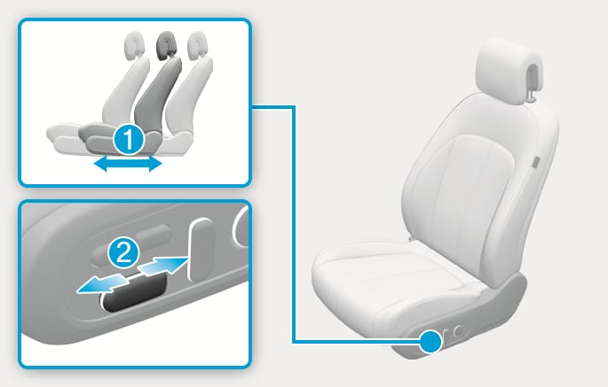
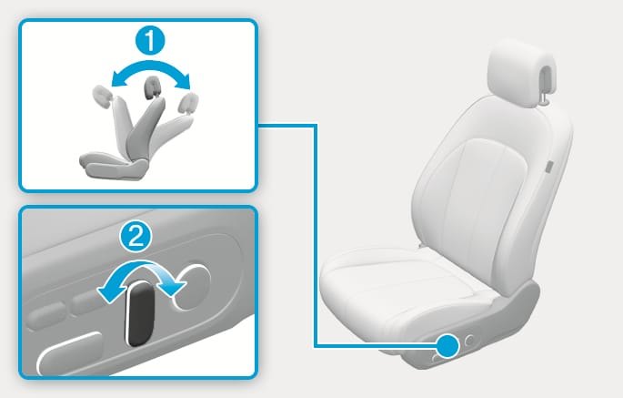
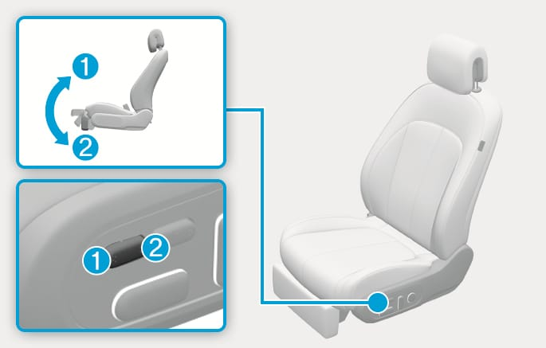
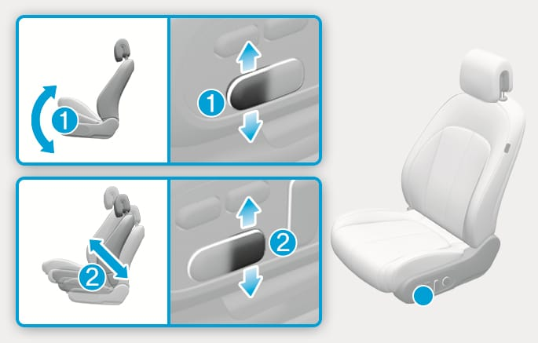
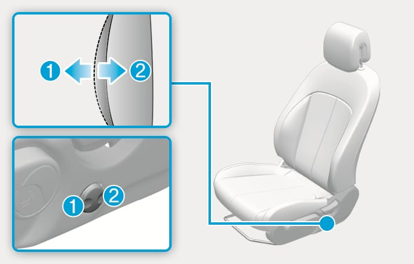
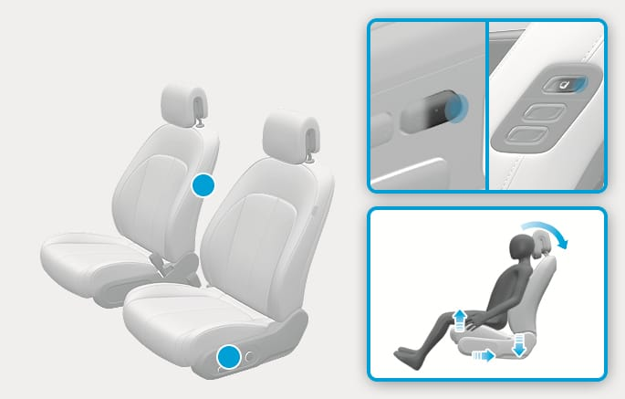
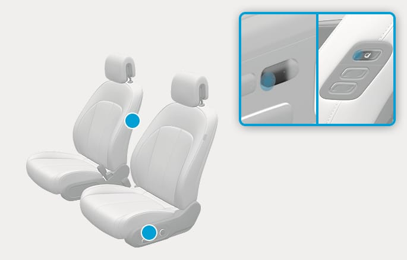

전동 조절식 앞좌석
-
전동식 좌석 조절 장치는 차량의 시동을 꺼도 작동합니다. 불의의 사고를 방지하기 위해, 어린이가 차량에 탑승한 경우 좌석 조절 스위치를 만지지 못하도록 하고, 어린이를 차 안에 혼자 두지 마십시오.
-
좌석 조절이 끝나면 스위치에서 손을 떼십시오. 조절 장치는 전기 모터로 작동되므로, 스위치를 과도하게 오랫동안 누르고 있으면 과부하로 인해 모터 및 전기 장치가 손상될 수 있습니다.
-
전동식 좌석 조절 장치는 많은 양의 전기를 소모합니다. 배터리 방전을 방지하려면 차량의 시동을 켠 후 좌석 조절 기능을 사용하십시오.
-
동시에 두 개 이상의 스위치를 조작하지 마십시오. 모터 또는 전기 장치가 손상될 수 있습니다.

2C_AdjustSeatForwardBackwardAuto
시트 전후 위치 스위치를 앞뒤로 밀어(2) 좌석의 전후 위치를 조절하십시오(1).

2C_AdjustSeatBackAuto
등받이 각도 레버를 앞뒤로 밀어(2) 등받이 각도를 조절하십시오(1).

2C_LegSupportCautionAdjust
편히 휴식할 때 다리를 받침대에 올려놓고 각도를 조절하십시오.
-
스위치 앞부분(1)을 누르면 다리 받침대가 올라갑니다.
-
스위치 뒷부분(2)을 누르면 다리 받침대가 내려갑니다.
-
다리 받침대를 올리거나 내릴 때 앞좌석 시트 밑이나 근처 구조물에 발이나 손이 끼지 않도록 주의하십시오. 예기치 못한 상해가 발생할 수 있습니다.
-
어린이가 스위치를 조작하지 못하도록 주의하십시오. 어린이가 스위치를 조작하면 예기치 못한 상해가 발생할 수 있습니다.
다리 받침대 끝에 앉거나 무거운 물건을 올려놓지 마십시오. 다리 받침대 구동 장치가 손상될 수 있습니다
다리 받침대를 사용하기 전에, 좌석을 뒤로 이동하십시오. 좌석이 주변 부품과 가까우면 다리 받침대 사용이 제한됩니다.

2C_AdjustSeatHeightAuto
쿠션 각도/높낮이 스위치 앞부분(1)과 뒷부분(2)을 위아래로 밀거나 당겨 쿠션의 각도와 높이를 조절하십시오.

2C_AdjustSeatBackCushionAuto
허리 지지대 스위치 앞부분(1) 또는 뒷부분(2)을 눌러 허리 지지대(럼버 서포트)의 지지 위치를 조절하십시오.
-
허리 지지대에 날카로운 물체가 닿지 않도록 주의하십시오.
-
허리 지지대가 끝까지 이동해 더이상 움직이지 않는다면 스위치에서 손을 떼십시오. 스위치를 계속 누르고 있는 경우 과부하 등으로 인해 내부의 모터가 손상될 수 있습니다.
휴식에 최적화된 균형 잡힌 자세를 통해 특정 부위에 집중되는 하중을 분산 시켜 관절의 부담을 줄이고 피로를 완화시킬 수 있습니다.
-
기능이 작동할 때 신체 일부나 물건이 끼이지 않도록 주의하십시오.
-
주행 중에는 릴렉션 기능을 작동하지 마십시오. 운전자의 주의가 분산되어 사고가 발생할 수 있습니다.
-
주차 또는 정차 중 휴식을 취할 때만 기능을 작동하십시오. 주행 중 기능을 작동하다 사고가 발생하는 경우 부상 위험이 증가할 수 있습니다.
-
안전벨트를 착용한 채 시트를 작동하는 경우 안전벨트가 가슴에 밀착되지 않아 부상 위험이 증가할 수 있습니다.
-
뒷좌석이 뒤쪽으로 끝까지 당겨져 있으며 등받이가 세워져 있는 경우에만 릴렉션 기능을 사용하고, 뒷좌석에 탑승자나 적재물이 있는 경우 릴렉션 기능을 사용하지 마십시오.
릴렉션 기능 켜기

2C_RelaxationComfortSeatOperation
운전석
-
차량을 완전히 정차한 후 'P'(주차)로 변속하십시오.
-
시동 'ACC', 'ON' 또는 시동이 걸린 상태에서 릴렉션 기능 스위치의 뒷부분을 길게 누르면 인포테인먼트 화면에 알림이 표시(모니터 'ON' 시)됩니다.
-
뒷좌석 확인 후 5초 이내에 스위치 뒷부분을 다시 길게 누르면 좌석의 전후 위치, 등받이 각도, 시트 쿠션 높이가 미리 저장해 둔 릴렉션 컴포트 시트 위치로 변경됩니다.
동승석
시동 'ACC', 'ON' 또는 시동이 걸린 상태에서 릴렉션 기능 스위치의 뒷부분을 길게 누르면 인포테인먼트 화면에 알림이 표시(모니터 'ON' 시)됩니다.
-
뒷좌석 확인 후 5초 이내에 스위치 뒷부분을 다시 길게 누르면 좌석의 전후 위치, 등받이 각도, 시트 쿠션 높이가 미리 저장해 둔 릴렉션 컴포트 시트 위치로 변경됩니다.
-
기능이 작동하면 시트 쿠션, 시트 쿠션 익스텐션(사양 적용 시) 및 등받이가 휴식에 최적화된 위치와 각도로 조절됩니다.
-
의도치 않게 스위치가 눌려 릴렉션 기능이 작동하는 경우, 시트 조절 스위치를 이용해 작동을 멈추거나 시트를 제어할 수 있습니다.
릴렉션 기능 끄기

2C_RelaxationComfortSeatWorkInSwitch
릴렉션 기능을 끄려면 운전석 또는 동승석 측면의 릴렉션 스위치 앞부분을 길게 누르십시오.
-
운전석/동승석: 릴렉션 작동 전 마지막 사용 위치
-
다음과 같은 경우 운전석 시트 복귀 기능이 작동하지 않습니다.
-
운전석 자세 메모리 시스템의 초기화가 필요한 경우
-
변속기 위치가 'P'(주차)가 아닌 경우
-
차량이 3 km/h 이상의 속도로 움직이는 경우
-
-
기능을 중단하고 시트를 원래 위치로 복귀할 때 릴렉션 기능 스위치만 사용하십시오. 다른 시트 조절 스위치를 사용하면 시트 쿠션 높이가 정상적으로 조절되지 않을 수 있습니다.